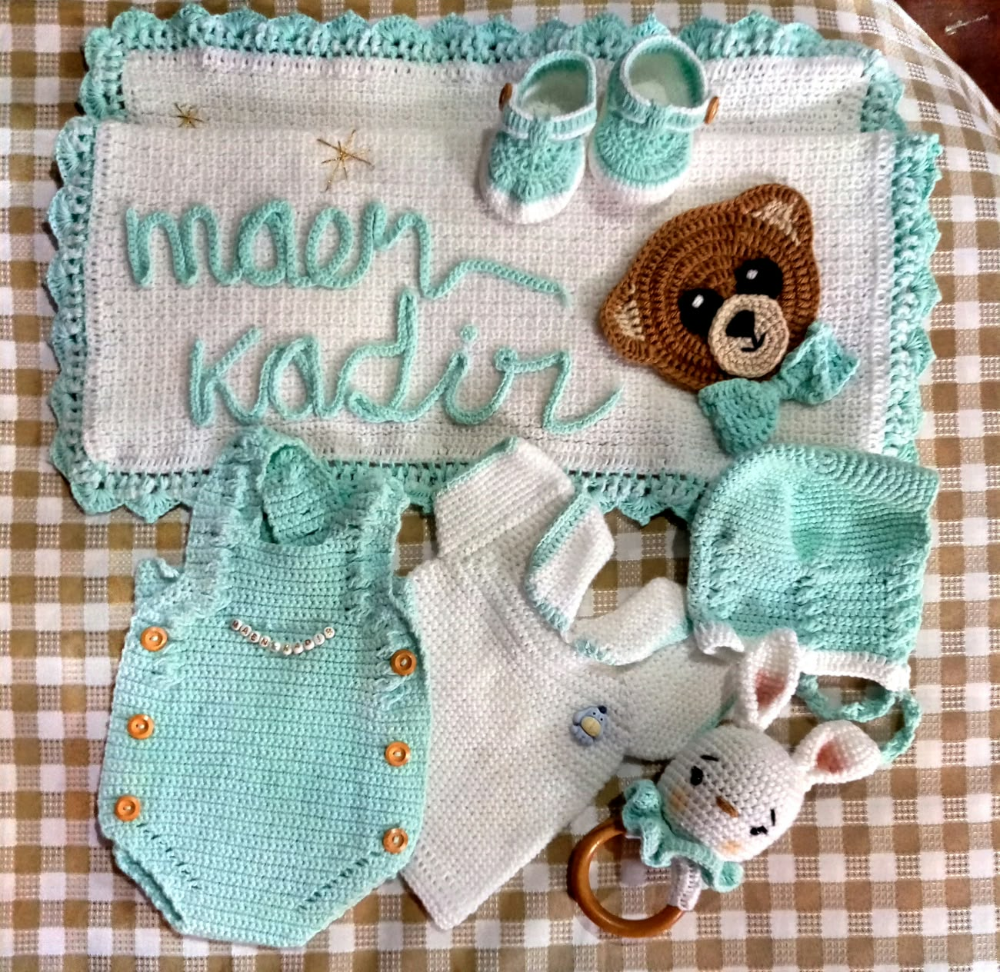
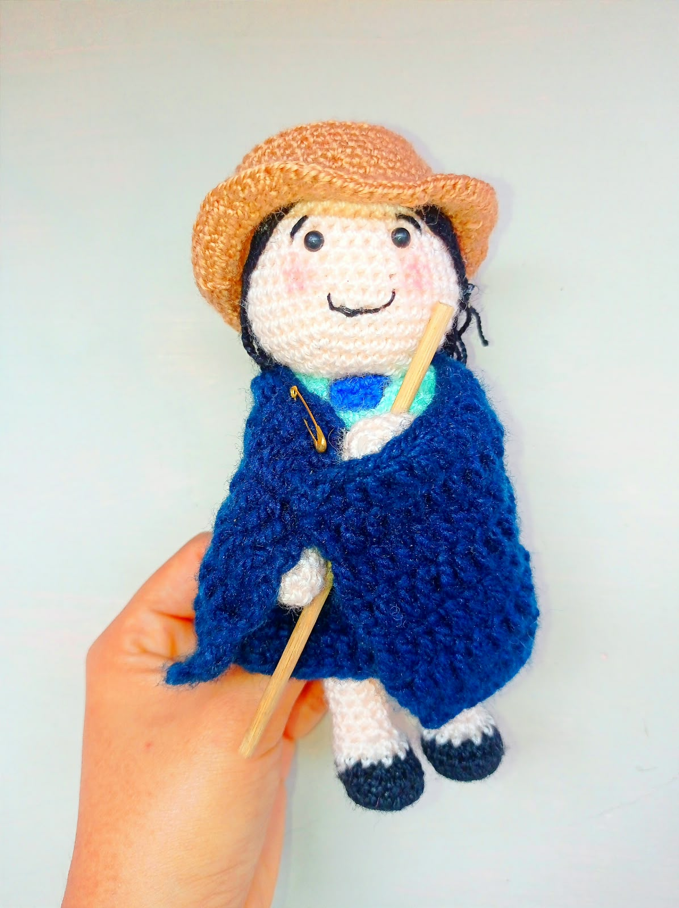
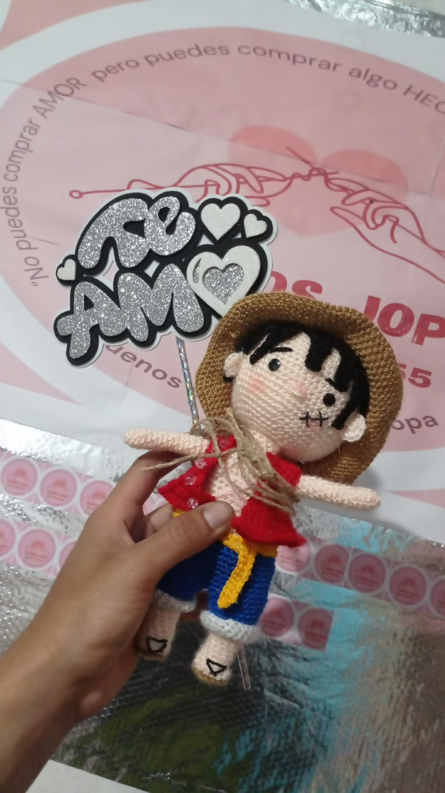
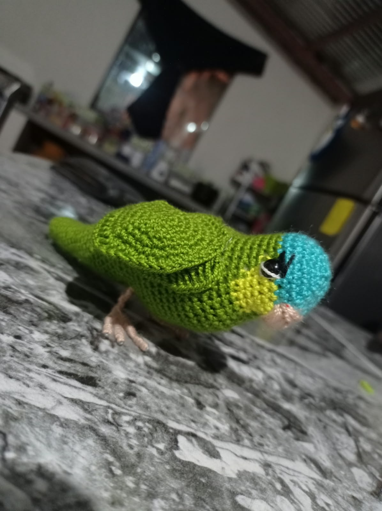
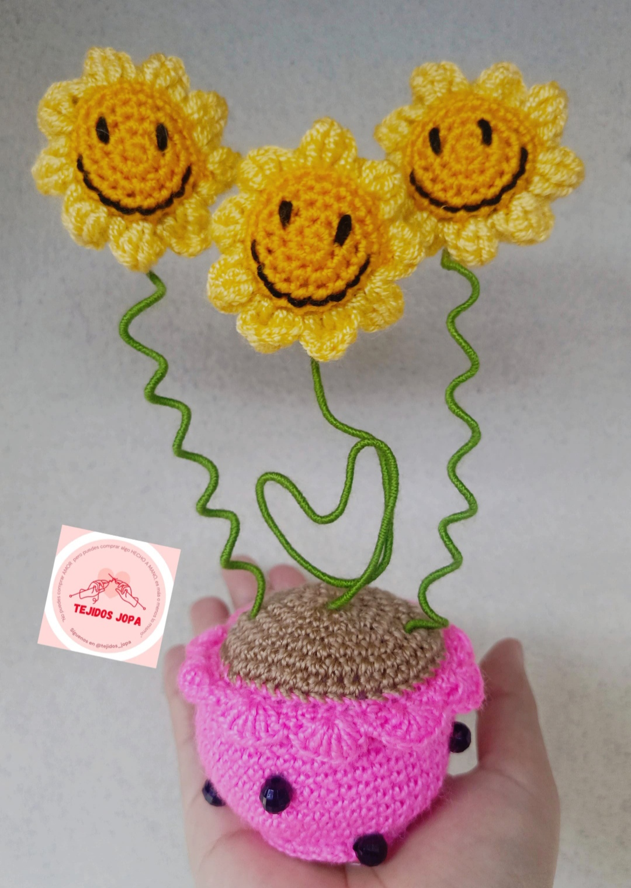
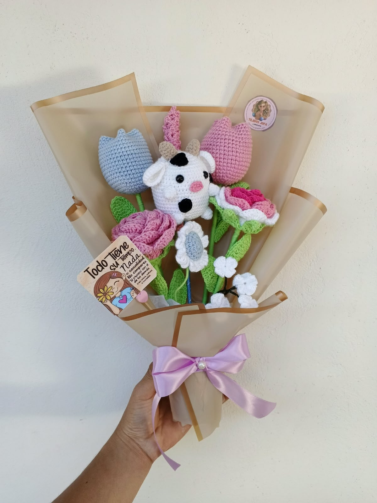
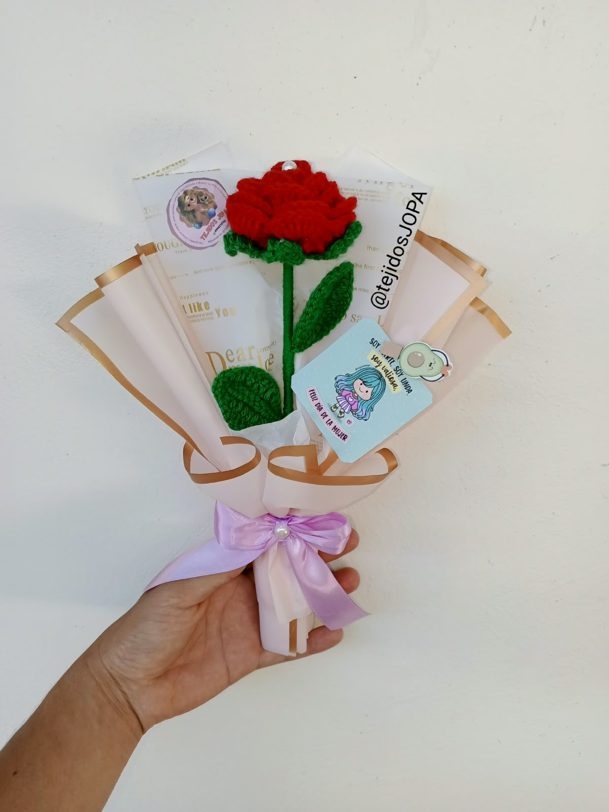

Conjuntos
Fotos

Prendas cálidas tejidas a medida en tus colores favoritos.
Desde $25.00 Pedir por WhatsappPrendas, accesorios y amigurumis artesanales hechos a mano.
Ver catálogo Pedir por WhatsappFotos

Prendas cálidas tejidas a medida en tus colores favoritos.
Desde $25.00 Pedir por WhatsappFotos




Videos
Muñecos artesanales personalizados a tu gusto ideales para regalos.
Desde $3.50 Pedir por WhatsappFotos



Detalles resistentes y únicos diseñamos con amor cada detalle.
Desde $5.00 Pedir por WhatsappHacemos tejidos a medida en los colores y tamaños que prefieras. Envios a todo el Ecuador y entregas sin recargo adicional dentro de Santo Domingo de los Tsachilas.
Escríbenos por WhatsApp